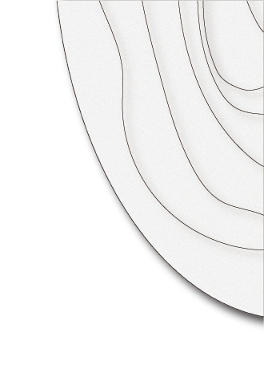
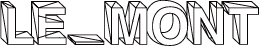
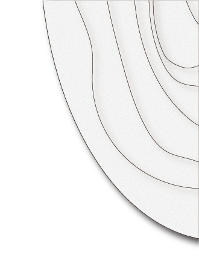
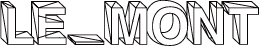

디자이너 르몽의 해체주의에 대해 다룬
전시회가 올해 말에 현대 미술관에서 열리게
된다. 당신이 해체주의에 관심이 있거나
그의 예술세계를 이해하기는 굉장히 어려울 것이나
왜 해체주의를 하게 되었는지. 또는 디자인계의
이단아라고 불리는지 알게되는 경험이 될
것이다.
전시회가 올해 말에 현대 미술관에서 열리게
된다. 당신이 해체주의에 관심이 있거나
그의 예술세계를 이해하기는 굉장히 어려울 것이나
왜 해체주의를 하게 되었는지. 또는 디자인계의
이단아라고 불리는지 알게되는 경험이 될
것이다.
현대미술관 2F